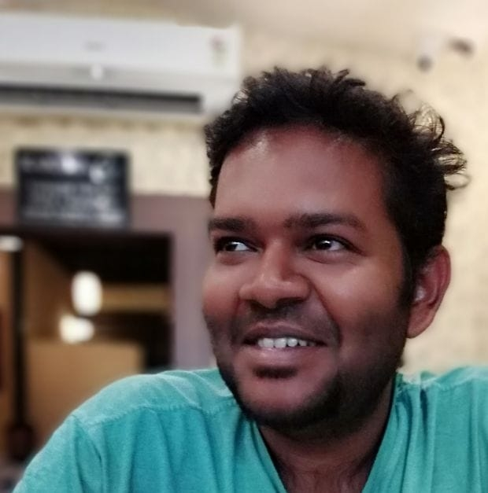

WEBSITES
https://github.com/gulakihttps://www.linkedin.com/in/anustuv-pal-1bb70126/
https://theorycalc.pythonanywhere.com

RESEARCH EXPERIENCE AND EDUCATION
| 2018-present | Research associate at Indian Institute of Science, Bangalore. |
| 2010-2018 |
Doctor of Philosophy (PhD), Experimental Low Temperature Physics. Institute: Indian Institute of Science, Bangalore, India. Doctoral Thesis: Electron bubbles in liquid Helium Supervisor: Dr. Ambarish Ghosh |
| 2009-2010 |
Master’s Thesis at University of Pune. Thesis title: Study of Squeezed states and coherent states of the 1D, 2D and 3D quantum Harmonic Oscillators. Supervisor: Dr. P. S. Joag. |
| 2007-2010 |
Master of Science (MSc), Physics. University of Pune, India |
| 2008 |
Master’s External Project at S.N. Bose National Center for Basic Sciences. Project Title: Numerical solutions of 1D, 2D and 3D Schrodinger equation using finite difference time domain (FDTD) method. Supervisor: Dr. Sumita Dutta. |
| 2004-2007 |
Bachelor of Science (BSc with Honors), Physics. Institute: St. Xavier’s College, Calcutta University, India. |
| 2004 |
Indian School Certificate (ISC) examination Don Bosco Park Circus, Kolkata, India. |
| 2002 |
Indian Certificate Secondary Examination. Don Bosco School, Park Circus, Kolkata, Park Circus. |
COMPUTATIONAL PROJECTS
- Solved for quantum mechanical ground state and excited state energy and wavefunctions for arbitrary 1D, 2D and 3D potentials using time dependent finite element method in C++.
- Solved for quantum mechanical coherent and squeezed states in C++ for studying properties and experimental methods to generate squeezed states.
- Simulated physical phenomena like electric fields and heat flow in COMSOL MultiPhysics to design low temperature experiments.
- Built several LABView programs to set up experimental signal chains, data acquisition cards, synchronized various electronic equipment (oscilloscopes, signal generators, etc.) for automating experimental tool chains.
- Built complete software suite in MATLAB for analysis of large volumes of experimentally captured video data for object tracking, extraction of various data like particle trajectories, particle sizes, and temporal behavior. We optimized numerical simulations on experimentally derived trajectories to predict physical properties like radius and charge of the tracked objects.
- Developed numerical calculation for propagation of acoustic waves from piezo-electric transducer of any geometry.
- Built performant time dependent finite element simulation to solve complex system of coupled non-linear inhomogeneous partial differential equations (Navier-Stokes equation + Heat equation with convection) to simulate heat flow around bubbles in liquid environment to predict collapse dynamics.
- Built a simulation using Monte-Carlo algorithms to solve for optical absorption in a large population of quantum mechanical objects affected by mechanical pressure waves.
- Built a simulation of an experiment for optical absorption spectroscopy. The natural phenomenon under study depends on several external controllable parameters and internal parameters. The simulation enabled us to improve the expected signal to noise ratio, optimize for favorable experimental conditions, and study the feasibility and determine the specifications of equipment required.
- Used low level BLAS and LAPACK subroutines in FORTRAN to calculate eigenvalues for simple 1D quantum systems.
- Wrote various Python scripts for automation of data analysis and build executions.
- Presently developing large software for musical composition in Python as a hobby project.
- Presently investigating machine learning through keras and tensorflow2.0 in order to automate object tracking in large volumes of experimentally obtained video data.
EXPERIMENTAL PROJECTS
- Designed parts of cryogenic system in AutoCAD. The in house built cryogenic system was capable of reaching 1.3 K by evaporative cooling. Designed and fabricated stainless experimental cell to house low temperature experiments performed in liquid Helium 4.
- Performed rigorous leak tests on vacuum devices and various solder and weld joints for building hermitically sealed systems.
- Worked with high energy Carbon Dioxide laser and optical experiments in visible and infra-red spectrum.
- Designed and built electromagnetic quadrupolar Paul trap to trap charged particles in liquid Helium for extended periods of time.
- Used and setup optics and imaging system for Photron high speed camera for video data capture at 20,000 frames per second.
- Used Arduino microcontroller to control stepper motor and other electronic devices. It was used to study possible new techniques in measurement of laser signals absorbed by experimental sample.
PUBLICATIONS
- A. Pal, D. Morrill, A. Ghosh. “Feasibility of 1s-1p-1d optical absorption measurements on electron bubbles in liquid Helium” (manuscript in preparation).
- A. Pal, N. Yadav, V. Vadakkumbatt, A. Ghosh. “Lifetime of electron bubbles in 1P state close to lambda point” (submitted to journal)
- A. Pal, E. M. Joseph, V. Vadakkumbatt, N. Yadav, V. Srinivasan, H. J. Maris, A. Ghosh. “Collapse of vapor-filled bubbles in liquid helium”, Journal of Low temperature physics (2016).
- E. M. Joseph, V. Vadakkumbatt, A. Pal, A. Ghosh. "Stable Trapping of Multielectron Helium Bubbles in a Paul Trap." Journal of Low Temperature Physics (2016): 1-8.
- E. M. Joseph, V. Vadakkumbatt, A. Pal, A. Ghosh. "High speed imaging of generation and collapse of multielectron bubbles in liquid helium." Journal of Low Temperature Physics 175.1-2 (2014): 78-84.
- V. Vadakkumbatt, E. M. Joseph, A. Pal, A. Ghosh. "Studying electrons on curved surfaces by trapping and manipulating multielectron bubbles in liquid helium." Nature communications 5 (2014).
- V. Vadakkumbatt, E. M. Joseph, A. Pal, A. Ghosh. "Surface instabilities and generation of multielectron bubbles under pulsed electric fields." Journal of Low Temperature Physics 171.3-4 (2013): 239-244.
COMPUTATIONAL SKILLS
| MATLAB | Video analysis, object tracking, simulations and visualizations, scientific software development, digital signal processing, general computation. |
| LabView | device control, synchronization, data acquisition, building virtual instruments. |
| Python | Scripting, test driven + version controlled software development, web development using Flask, Matplotlib, cython, Python C extensions, pandas, numpy, SciPy, scikit-learn, Sphinx documentation, multiprocessing, multithreading, asyncio, general problem solving, hobby projects, proficient in PyCharm and jupyter notebook. |
| Machine Learning and AI | Scipy, scikit-learn, keras (learning), tensorflow2.0 (learning). |
| C++ and C | Developed several simulations using Finite element methods, Monte Carlo methods, solved complex systems of partial inhomogeneous differential equations. |
| Gnuplot, Origin Lab | scripting and prototyping visualizations. Data analysis, graphing and visualization. |
| AutoCAD, Adobe Illustrator, Krita, Tikz | Design and illustration |
| COMSOL MultiPhysics | Problem solving and simulation, experimental design parameters. |
| Fortran, Visual Studio 2005 | Have used in the past. |
| General skills | LATEX, presentations, HTML, CSS, ability to learn software and languages and packages quickly. |
CONFERENCE PRESENTATIONS/WORKSHOPS
- International conference on “Electrons in liquid Helium”, Bangalore, 2020 (Poster presentation)
- International conference on Quantum Fluids and Solids, Prague, Czech Republic, 2016 (Poster presentation)
FELLOWSHIPS AND AWARDS
| 2020 | Certificate for course “Essentials of Machine Learning” from AILabs, Kolkata. |
| 2016 | GARP Travel grant for attending conference at Prague, CZ, awarded by Indian Institute of Science |
| 2012 | Senior Research Fellowship awarded by Council of Scientific and Industrial Research (CSIR) to pursue doctorate studies. |
| 2010 | Junior Research Fellowship awarded by Council of Scientific and Industrial Research (CSIR) to pursue doctorate studies. (CSIR-National Eligibility Test All India Rank 137) |
| 2003 | Winner of state level inter-school “Birla Industrial and Technological Museum Computer Quiz” |
TEACHING EXPERIENCE
- Teaching assistant at IISc, Bangalore for undergraduate experimental course (1 semester).
- Taught Physics at a Narayana Olympiad School, Bangalore for 6 months (May-Oct, 2018).